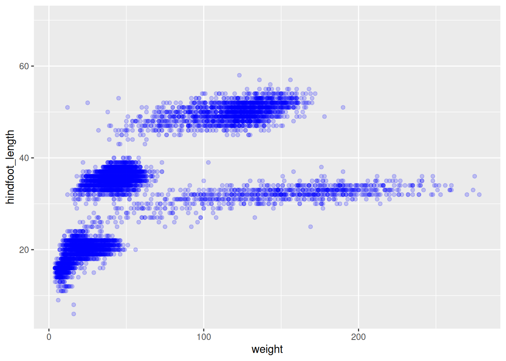

library(ggplot2)
library(ratdat)Introduction to R
Set up
Install R & RStudio
On personal or unrestricted machines, install R and then RStudio directly.
On restricted/organisational machines (e.g. your University or workplace), install both R and RStudio (in that order) from your institutional software repository.
Open RStudio, navigate to the top Tools menu > Install Packages, then enter tidyverse,ratdat,glue and click install. It may take a minute or two to install, and you’ll see lots of text printed in the console. Once finished, you will see a blue ‘>’ symbol in the bottom left console pane.
Download the lesson R project
- Download and save this lesson repository from GitHub https://github.com/tesaunders/r-intro-quick/archive/refs/heads/main.zip to your Desktop.
- Extract the zip file and open the file
r-intro-quick.Rproj
1. R & RStudio
Programming vs point-and-click
R is a programming language as well as software that runs R code.
RStudio is a popular software interface that can make it easier to write R scripts and interact with R.
Programming languages have many benefits over point and click software:
- Analysing your data with a series of written commands provides a record of exactly what you’ve done, aiding transparency and research integrity.
- When these commands are saved into a script file, they can easily be rerun on similar data, saving you valuable time and opening up new possibilities.
- R produces high-quality graphics, has a package for almost any type of analysis you’ll want to perform, and has a large and welcoming user community for help and guidance.
Projects
It’s best to keep related files and analyses together in project folders. You can then set up an RStudio project you’re working on, which provides some useful features when working with R.
Portable project stuff
Console vs Script
You can run commands directly in the R console, or you can write them into an R script.
Console:
- Where code is run/executed
- Type commands at the prompt (
>symbol) - Press Enter to execute the command and print the result
- Can’t access what you did after closing RStudio
Script:
- A list of R commands in a plain text file with a
.Rextension File → New File → R Scriptor+button in the top left corner of RStudioCmd+Enter(Mac) orCtrl+Enter(Windows) will run the line of code that your cursor is on, or which is highlighted- You can leave comments with
# - Commands are saved and can be rerun later
2. Plotting with ggplot2
Load the packages we need with library(). We’ll talk more about functions later.
ggplot is a popular plotting package. Plots made with this packages are built step by step by adding new layers.
The ratdat package contains data from the Portal Project, a long-term dataset from Portal, Arizona, in the Chihuahuan desert.
We will be using a dataset called complete_old.
?complete_oldTo build a plot we can start with a basic template:
ggplot(data = <DATA>, mapping = aes(<MAPPINGS>)) + <GEOM_FUNCTION>()
We need to specify everything within <>.
ggplot(data = complete_old)
The plot is blank because we haven’t told ggplot() which variables in the data we want to plot.
ggplot(data = complete_old, mapping = aes(x = weight, y = hindfoot_length))We haven’t specified how we want the data to be displayed. We do this using geom_ functions, which specify the type of geometry we want, such as points, lines, or bars. We can add a geom_point() layer to our plot by using the + sign.
ggplot(data = complete_old, mapping = aes(x = weight, y = hindfoot_length)) +
geom_point()
When we have overlapping points we can adjust the transparency of the points using the alpha argument, which takes a value between 0 and 1:
ggplot(data = complete_old, mapping = aes(x = weight, y = hindfoot_length)) +
geom_point(alpha = 0.2)Change the color of points:
ggplot(data = complete_old, mapping = aes(x = weight, y = hindfoot_length)) +
geom_point(alpha = 0.2, color = "blue")
Change the colour of points to take on the value of another variable:
ggplot(data = complete_old, mapping = aes(x = weight, y = hindfoot_length, color = plot_type)) +
geom_point(alpha = 0.2)
Make a boxplot with plot_type on the x axis:
ggplot(data = complete_old, mapping = aes(x = plot_type, y = hindfoot_length)) +
geom_boxplot()
Change the color of plots using fill and remove legend:
ggplot(data = complete_old, mapping = aes(x = plot_type, y = hindfoot_length, fill = plot_type)) +
geom_boxplot(show.legend = FALSE)
Change theme by specifying a built-in theme called theme_bw():
ggplot(data = complete_old, mapping = aes(x = plot_type, y = hindfoot_length, fill = plot_type)) +
geom_boxplot(show.legend = FALSE) +
theme_bw()Change the colour scheme to use specific colours. You need to specify as many colours as there are groups. There are a range of scale_ functions, and you need to match based on the aesthetic that has been mapped, eg scale_fill_ relates to the fill scales, whereas scale_color_ relates to the colour scales in aes().
ggplot(data = complete_old, mapping = aes(x = plot_type, y = hindfoot_length, fill = plot_type)) +
geom_boxplot(show.legend = FALSE) +
theme_bw() +
scale_fill_manual(values = c("darkgreen", "skyblue", "pink", "grey", "purple"))
Give the plot a title and change the x and y labels:
ggplot(data = complete_old, mapping = aes(x = plot_type, y = hindfoot_length, fill = plot_type)) +
geom_boxplot(show.legend = FALSE) +
theme_bw() +
labs(title = "Rodent Size By Plot Type",
x = "Plot Type",
y = "Hindfoot Length (mm)")Centre the plot title:
ggplot(data = complete_old, mapping = aes(x = plot_type, y = hindfoot_length, fill = plot_type)) +
geom_boxplot(show.legend = FALSE) +
theme_bw() +
theme(plot.title = element_text(hjust = 0.5)) +
labs(title = "Rodent Size By Plot Type",
x = "Plot Type",
y = "Hindfoot Length (mm)")Save the plot by assigning it to an object called final_plot and using ggsave():
final_plot <- ggplot(data = complete_old, mapping = aes(x = plot_type, y = hindfoot_length, fill = plot_type)) +
geom_boxplot(show.legend = FALSE) +
theme_bw() +
theme(plot.title = element_text(hjust = 0.5)) +
labs(title = "Rodent Size By Plot Type",
x = "Plot Type",
y = "Hindfoot Length (mm)")
ggsave(plot = final_plot, filename = "plots/rodent-size-plot-type.png",
width = 8, height = 6)By default, ggplot dimensions are specified in inches, and images are 300 DPI. So this image will have a resolution of 2400 pixels wide by 1800 pixels high.
Exercise (5 min)
Create a box plot using complete_old of plot_type vs weight with the following features:
- Colour inside the box based on plot_type
- Boxes are 50% transparent
- Box outlines and outlier points are
grey75 - Set the theme to be black and white
- Angle the x-axis text 45 degrees and hjust so the end of the label is inline with the tick
- Give nice labels to the axes and a title
ggplot(data = FIXME, mapping = aes(x = FIXME,
y = FIXME,
fill = FIXME)) +
geom_boxplot(FIXME)+
theme_FIXME() +
theme(FIXME) +
labs(FIXME)
Example solution
# create a plot
ggplot(data = complete_old, mapping = aes(x = plot_type,
y = weight,
fill = plot_type)) +
geom_boxplot(alpha = 0.5,
colour = 'grey75')+
theme_bw() +
theme(axis.text.x = element_text(angle = 45,
hjust = 1)) +
labs(title = "Rodent Weight by Plot Type",
x = "Plot Type",
y = "Weight (g)")3. Programming basics
Vectors
There are 4 main types of vectors:
"character"for text. Each entry is wrapped in quotes. In other programming languages, this type of data may be referred to as “strings”."integer"for integers. All the numeric values incomplete_oldare integers. You may sometimes see integers represented like2Lor20L. TheLindicates to R that it is an integer, instead of the next data type,"numeric"."numeric", aka"double", vectors can contain numbers including decimals. Other languages may refer to these as “float” or “floating point” numbers."logical"forTRUEandFALSE, which can also be represented asTandF. In other contexts, these may be referred to as “Boolean” data. Note they are not wrapped in quotes.
Vectors can only be of a single type.
To create a vector from scratch, we can use the c() function, putting values inside, separated by commas. Vectors are the basic building blocks of all data in R.
Data.frames
Data.frames are made up of vectors; each column in a data.frame is a vector.
We can see more information about complete_old by using the structure function:
str(complete_old)tibble [16,878 × 13] (S3: tbl_df/tbl/data.frame)
$ record_id : int [1:16878] 1 2 3 4 5 6 7 8 9 10 ...
$ month : int [1:16878] 7 7 7 7 7 7 7 7 7 7 ...
$ day : int [1:16878] 16 16 16 16 16 16 16 16 16 16 ...
$ year : int [1:16878] 1977 1977 1977 1977 1977 1977 1977 1977 1977 1977 ...
$ plot_id : int [1:16878] 2 3 2 7 3 1 2 1 1 6 ...
$ species_id : chr [1:16878] "NL" "NL" "DM" "DM" ...
$ sex : chr [1:16878] "M" "M" "F" "M" ...
$ hindfoot_length: int [1:16878] 32 33 37 36 35 14 NA 37 34 20 ...
$ weight : int [1:16878] NA NA NA NA NA NA NA NA NA NA ...
$ genus : chr [1:16878] "Neotoma" "Neotoma" "Dipodomys" "Dipodomys" ...
$ species : chr [1:16878] "albigula" "albigula" "merriami" "merriami" ...
$ taxa : chr [1:16878] "Rodent" "Rodent" "Rodent" "Rodent" ...
$ plot_type : chr [1:16878] "Control" "Long-term Krat Exclosure" "Control" "Rodent Exclosure" ...The $ in front of each variable is an operator that allows us to select individual columns from a data.frame.
complete_old$year [1] 1977 1977 1977 1977 1977 1977 1977 1977 1977 1977 1977 1977 1977 1977 1977
[16] 1977 1977 1977 1977 1977 1977 1977 1977 1977 1977 1977 1977 1977 1977 1977
[31] 1977 1977 1977 1977 1977 1977 1977 1977 1977 1977 1977 1977 1977 1977 1977
[46] 1977 1977 1977 1977 1977 1977 1977 1977 1977 1977 1977 1977 1977 1977 1977
[61] 1977 1977 1977 1977 1977 1977 1977 1977 1977 1977 1977 1977 1977 1977 1977
[76] 1977 1977 1977 1977 1977 1977 1977 1977 1977 1977 1977 1977 1977 1977 1977
[91] 1977 1977 1977 1977 1977 1977 1977 1977 1977 1977
[ reached 'max' / getOption("max.print") -- omitted 16778 entries ]We get back all values in the year column.
Objects and assignment
We can assign a value to an object by naming the object and using the assignment operator (<-):
x <- 5We can also assign objects to other objects:
y <- xIf we now overwrite the value of x, the value of y will not change:
x <- 10
y[1] 5Functions and arguments
Functions take arguments, and some arguments are required. Optional arguments are called options.
The round() function rounds a number. Lets take a look at how it works:
?round()It requires a number to round (x), and optionally the number of digits to round to (digits):
round(x = 3.14159, digits = 1)[1] 3.1If we don’t provide digits it will default to 0:
round(x = 3.14159)[1] 3If we provide arguments in the order expected we don’t have to name them (but it’s good to when starting out):
round(3.14159, 1)[1] 3.1Reading in data
Up until now, we’ve been working with the complete_old dataframe contained in the ratdat package. However, you’ll typically want to access data stored somewhere on your computer as files. Our project contains a data file in the /data directory, and we’re going to read it in now.
First, let’s load the Tidyverse package. This contains many other packages, including some we’ve used already like ggplot2, but it’s usually more convenient to load all of them at once.
library(tidyverse)tidyverse vs. base R
In R, there are often many ways to get a job done. The phrase base R is used to refer to approaches that utilize functions contained in R’s default packages. There are some key base R approaches we will not be teaching. These include square bracket subsetting and base plotting. You may come across code written by other people that looks like surveys[1:10, 2] or plot(surveys$weight, surveys$hindfoot_length), which are base R commands.
The tidyverse packages share a similar syntax and philosophy, making them consistent and producing highly readable code. They are also very flexible and powerful, and tend to have very clear documentation written with novice users in mind.
Because we’re using an RStudio project, we can specify the relative file path when reading in our data (relative to the project folder):
surveys <- read_csv("data/surveys_complete_77_89.csv")Subsetting
Two of the most commonly used functions for manipulating data are select(), which selects certain columns of a data.frame, and filter(), which filters out rows according to certain criteria.
The first argument for select() is the name of the data.frame, and the rest of the arguments are unquoted names of the columns you want:
select(surveys, plot_id, species_id, hindfoot_length)# A tibble: 16,878 × 3
plot_id species_id hindfoot_length
<dbl> <chr> <dbl>
1 2 NL 32
2 3 NL 33
3 2 DM 37
4 7 DM 36
5 3 DM 35
6 1 PF 14
7 2 PE NA
8 1 DM 37
9 1 DM 34
10 6 PF 20
# ℹ 16,868 more rowsThe columns are arranged in the order we specified inside select().
Put a - in front of the column you want to exclude:
select(surveys, -record_id, -year)# A tibble: 16,878 × 11
month day plot_id species_id sex hindfoot_length weight genus species
<dbl> <dbl> <dbl> <chr> <chr> <dbl> <dbl> <chr> <chr>
1 7 16 2 NL M 32 NA Neotoma albigu…
2 7 16 3 NL M 33 NA Neotoma albigu…
3 7 16 2 DM F 37 NA Dipodomys merria…
4 7 16 7 DM M 36 NA Dipodomys merria…
5 7 16 3 DM M 35 NA Dipodomys merria…
6 7 16 1 PF M 14 NA Perognat… flavus
7 7 16 2 PE F NA NA Peromysc… eremic…
8 7 16 1 DM M 37 NA Dipodomys merria…
9 7 16 1 DM F 34 NA Dipodomys merria…
10 7 16 6 PF F 20 NA Perognat… flavus
# ℹ 16,868 more rows
# ℹ 2 more variables: taxa <chr>, plot_type <chr>To select the 3rd, 4th, 5th, and 10th columns, we could run the following code:
select(surveys, c(3:5, 10))# A tibble: 16,878 × 4
day year plot_id genus
<dbl> <dbl> <dbl> <chr>
1 16 1977 2 Neotoma
2 16 1977 3 Neotoma
3 16 1977 2 Dipodomys
4 16 1977 7 Dipodomys
5 16 1977 3 Dipodomys
6 16 1977 1 Perognathus
7 16 1977 2 Peromyscus
8 16 1977 1 Dipodomys
9 16 1977 1 Dipodomys
10 16 1977 6 Perognathus
# ℹ 16,868 more rowsThe filter() function is used to select rows that meet certain criteria. To get all the rows where the value of year is equal to 1985:
filter(surveys, year == 1985)# A tibble: 1,438 × 13
record_id month day year plot_id species_id sex hindfoot_length weight
<dbl> <dbl> <dbl> <dbl> <dbl> <chr> <chr> <dbl> <dbl>
1 9790 1 19 1985 16 RM F 16 4
2 9791 1 19 1985 17 OT F 20 16
3 9792 1 19 1985 6 DO M 35 48
4 9793 1 19 1985 12 DO F 35 40
5 9794 1 19 1985 24 RM M 16 4
6 9795 1 19 1985 12 DO M 34 48
7 9796 1 19 1985 6 DM F 37 35
8 9797 1 19 1985 14 DM M 36 45
9 9798 1 19 1985 6 DM F 36 38
10 9799 1 19 1985 19 RM M 16 4
# ℹ 1,428 more rows
# ℹ 4 more variables: genus <chr>, species <chr>, taxa <chr>, plot_type <chr>The == sign means “is equal to”. There are several other operators we can use: >, >=, <, <=, and != (not equal to). Another useful operator is %in%, which asks if the value on the lefthand side is found anywhere in the vector on the righthand side. For example, to get rows with specific species_id values, we could run:
filter(surveys, species_id %in% c("RM", "DO"))# A tibble: 2,835 × 13
record_id month day year plot_id species_id sex hindfoot_length weight
<dbl> <dbl> <dbl> <dbl> <dbl> <chr> <chr> <dbl> <dbl>
1 68 8 19 1977 8 DO F 32 52
2 292 10 17 1977 3 DO F 36 33
3 294 10 17 1977 3 DO F 37 50
4 311 10 17 1977 19 RM M 18 13
5 317 10 17 1977 17 DO F 32 48
6 323 10 17 1977 17 DO F 33 31
7 337 10 18 1977 8 DO F 35 41
8 356 11 12 1977 1 DO F 32 44
9 378 11 12 1977 1 DO M 33 48
10 397 11 13 1977 17 RM F 16 7
# ℹ 2,825 more rows
# ℹ 4 more variables: genus <chr>, species <chr>, taxa <chr>, plot_type <chr>We can also use multiple conditions:
filter(surveys, year <= 1988 & !is.na(hindfoot_length))# A tibble: 12,779 × 13
record_id month day year plot_id species_id sex hindfoot_length weight
<dbl> <dbl> <dbl> <dbl> <dbl> <chr> <chr> <dbl> <dbl>
1 1 7 16 1977 2 NL M 32 NA
2 2 7 16 1977 3 NL M 33 NA
3 3 7 16 1977 2 DM F 37 NA
4 4 7 16 1977 7 DM M 36 NA
5 5 7 16 1977 3 DM M 35 NA
6 6 7 16 1977 1 PF M 14 NA
7 8 7 16 1977 1 DM M 37 NA
8 9 7 16 1977 1 DM F 34 NA
9 10 7 16 1977 6 PF F 20 NA
10 11 7 16 1977 5 DS F 53 NA
# ℹ 12,769 more rows
# ℹ 4 more variables: genus <chr>, species <chr>, taxa <chr>, plot_type <chr>We get rows with a year less than or equal to 1988 and whose hindfoot length values are not NA. The ! before the is.na() function means “not”.
Piping
What happens if we want to both select() and filter() our data?
An elegant solution to this problem is an operator called the pipe %>%. You can insert it by using the keyboard shortcut Shift+Cmd+M (Mac) or Shift+Ctrl+M (Windows).
surveys %>%
select(-day) %>%
filter(month >= 7)# A tibble: 8,244 × 12
record_id month year plot_id species_id sex hindfoot_length weight genus
<dbl> <dbl> <dbl> <dbl> <chr> <chr> <dbl> <dbl> <chr>
1 1 7 1977 2 NL M 32 NA Neotoma
2 2 7 1977 3 NL M 33 NA Neotoma
3 3 7 1977 2 DM F 37 NA Dipodo…
4 4 7 1977 7 DM M 36 NA Dipodo…
5 5 7 1977 3 DM M 35 NA Dipodo…
6 6 7 1977 1 PF M 14 NA Perogn…
7 7 7 1977 2 PE F NA NA Peromy…
8 8 7 1977 1 DM M 37 NA Dipodo…
9 9 7 1977 1 DM F 34 NA Dipodo…
10 10 7 1977 6 PF F 20 NA Perogn…
# ℹ 8,234 more rows
# ℹ 3 more variables: species <chr>, taxa <chr>, plot_type <chr>The pipe takes the object on the lefthand side and inserts it as the first argument of the function on the righthand side. By putting each of our functions onto a new line, we can build a nice, readable pipeline.
We can assign this final product to an object:
surveys_sub <- surveys %>%
select(-day) %>%
filter(month >= 7)Build a pipeline step by step prior to assignment. Add functions to the pipeline as you go, with the results printing in the console for you to view. Once you’re satisfied with your final result, go back and add the assignment arrow statement at the start. This approach is very interactive, allowing you to see the results of each step as you build the pipeline, and produces nicely readable code.
Another common task is creating a new column based on values in existing columns. For example, to add a new column that has the weight in kilograms instead of grams:
surveys %>%
mutate(weight_kg = weight / 1000)# A tibble: 16,878 × 14
record_id month day year plot_id species_id sex hindfoot_length weight
<dbl> <dbl> <dbl> <dbl> <dbl> <chr> <chr> <dbl> <dbl>
1 1 7 16 1977 2 NL M 32 NA
2 2 7 16 1977 3 NL M 33 NA
3 3 7 16 1977 2 DM F 37 NA
4 4 7 16 1977 7 DM M 36 NA
5 5 7 16 1977 3 DM M 35 NA
6 6 7 16 1977 1 PF M 14 NA
7 7 7 16 1977 2 PE F NA NA
8 8 7 16 1977 1 DM M 37 NA
9 9 7 16 1977 1 DM F 34 NA
10 10 7 16 1977 6 PF F 20 NA
# ℹ 16,868 more rows
# ℹ 5 more variables: genus <chr>, species <chr>, taxa <chr>, plot_type <chr>,
# weight_kg <dbl>You can create multiple columns in one mutate() call, and they will get created in the order you write them. This means you can even reference the first new column in the second new column:
surveys %>%
mutate(weight_kg = weight / 1000,
weight_lbs = weight_kg * 2.2)# A tibble: 16,878 × 15
record_id month day year plot_id species_id sex hindfoot_length weight
<dbl> <dbl> <dbl> <dbl> <dbl> <chr> <chr> <dbl> <dbl>
1 1 7 16 1977 2 NL M 32 NA
2 2 7 16 1977 3 NL M 33 NA
3 3 7 16 1977 2 DM F 37 NA
4 4 7 16 1977 7 DM M 36 NA
5 5 7 16 1977 3 DM M 35 NA
6 6 7 16 1977 1 PF M 14 NA
7 7 7 16 1977 2 PE F NA NA
8 8 7 16 1977 1 DM M 37 NA
9 9 7 16 1977 1 DM F 34 NA
10 10 7 16 1977 6 PF F 20 NA
# ℹ 16,868 more rows
# ℹ 6 more variables: genus <chr>, species <chr>, taxa <chr>, plot_type <chr>,
# weight_kg <dbl>, weight_lbs <dbl>Grouping
Many data analysis tasks can be achieved using the split-apply-combine approach: you split the data into groups, apply some analysis to each group, and combine the results in some way.
group_by() takes a data.frame and the name of one or more columns with categorical values that define the groups. summarize() then collapses each group into a one-row summary of the group, giving you back a data.frame with one row per group. The syntax for summarize() is similar to mutate(), where you define new columns based on values of other columns.
To calculate the mean weight of all our animals by sex:
surveys %>%
group_by(sex) %>%
summarize(mean_weight = mean(weight, na.rm = T))# A tibble: 3 × 2
sex mean_weight
<chr> <dbl>
1 F 53.1
2 M 53.2
3 <NA> 74.0We can define multiple columns in one summarize() call. The function n() will count the number of rows in each group.
surveys %>%
group_by(sex) %>%
summarize(mean_weight = mean(weight, na.rm = T),
n = n())# A tibble: 3 × 3
sex mean_weight n
<chr> <dbl> <int>
1 F 53.1 7318
2 M 53.2 8260
3 <NA> 74.0 1300You will often want to create groups based on multiple columns. For example, we might be interested in the mean weight of every species + sex combination.
surveys %>%
group_by(species_id, sex) %>%
summarize(mean_weight = mean(weight, na.rm = T),
n = n())# A tibble: 67 × 4
# Groups: species_id [36]
species_id sex mean_weight n
<chr> <chr> <dbl> <int>
1 AB <NA> NaN 223
2 AH <NA> NaN 136
3 BA M 7 3
4 CB <NA> NaN 23
5 CM <NA> NaN 13
6 CQ <NA> NaN 16
7 CS <NA> NaN 1
8 CV <NA> NaN 1
9 DM F 40.7 2522
10 DM M 44.0 3108
# ℹ 57 more rowsOur resulting data.frame is much larger, since we have a greater number of groups. We also see a strange value showing up in our mean_weight column: NaN. This stands for “Not a Number”, and it often results from trying to do an operation a vector with zero entries. If a particular group (like the AB species ID + NA sex group) has only NA values for weight, then the na.rm = T argument in mean() will remove all the values prior to calculating the mean. The result will be a value of NaN. Since we are not particularly interested in these values, let’s add a step to our pipeline to remove rows where weight is NA before doing any other steps. This means that any groups with only NA values will disappear from our data.frame before we formally create the groups with group_by().
surveys %>%
filter(!is.na(weight)) %>%
group_by(species_id, sex) %>%
summarize(mean_weight = mean(weight),
n = n())# A tibble: 46 × 4
# Groups: species_id [18]
species_id sex mean_weight n
<chr> <chr> <dbl> <int>
1 BA M 7 3
2 DM F 40.7 2460
3 DM M 44.0 3013
4 DM <NA> 37 8
5 DO F 48.4 679
6 DO M 49.3 748
7 DO <NA> 44 1
8 DS F 118. 1055
9 DS M 123. 1184
10 DS <NA> 121. 16
# ℹ 36 more rowsIt’s often useful to take a look at the results in some order, like the lowest mean weight to highest. We can use the arrange() function for that:
surveys %>%
filter(!is.na(weight)) %>%
group_by(species_id, sex) %>%
summarize(mean_weight = mean(weight),
n = n()) %>%
arrange(mean_weight)# A tibble: 46 × 4
# Groups: species_id [18]
species_id sex mean_weight n
<chr> <chr> <dbl> <int>
1 PF <NA> 6 2
2 BA M 7 3
3 PF F 7.09 215
4 PF M 7.10 296
5 RM M 9.92 678
6 RM <NA> 10.4 7
7 RM F 10.7 629
8 RF M 12.4 16
9 RF F 13.7 46
10 PP <NA> 15 2
# ℹ 36 more rowsIf we want to reverse the order, we can wrap the column name in desc():
surveys %>%
filter(!is.na(weight)) %>%
group_by(species_id, sex) %>%
summarize(mean_weight = mean(weight),
n = n()) %>%
arrange(desc(mean_weight))# A tibble: 46 × 4
# Groups: species_id [18]
species_id sex mean_weight n
<chr> <chr> <dbl> <int>
1 NL M 168. 355
2 NL <NA> 164. 9
3 NL F 151. 460
4 SS M 130 1
5 DS M 123. 1184
6 DS <NA> 121. 16
7 DS F 118. 1055
8 SH F 79.2 61
9 SH M 67.6 34
10 SF F 58.3 3
# ℹ 36 more rows
Exercise (5 min)
Using the surveys dataset:
- remove
NA’s from thehindfoot_length - remove rows missing
sex - find the minimum, mean, and maximum
hindfoot_length, and number of observations for eachspecies - order the results by the longest
hindfoot_length
FIXME %>%
filter(FIXME) %>%
group_by(FIXME) %>%
summarise(FIXME) %>%
FIXME(desc(FIXME))
Example solution
surveys %>%
filter(!is.na(hindfoot_length), !is.na(sex)) %>%
group_by(species) %>%
summarise(
n = n(),
min_hindfoot_length = min(hindfoot_length),
mean_hindfoot_length = mean(hindfoot_length),
max_hindfoot_length = max(hindfoot_length)
) %>%
arrange(desc(max_hindfoot_length))# A tibble: 16 × 5
species n min_hindfoot_length mean_hindfoot_length max_hindfoot_length
<chr> <int> <dbl> <dbl> <dbl>
1 spectabil… 2041 39 50.0 58
2 ordii 1373 28 35.4 53
3 merriami 5129 24 36.0 50
4 hispidus 98 21 28.5 39
5 leucogast… 707 17 20.6 39
6 albigula 753 25 32.3 38
7 fulvivent… 5 26 29 38
8 torridus 760 13 20.2 31
9 eremicus 783 14 20.2 30
10 maniculat… 373 16 20.4 25
11 penicilla… 348 16 21.7 25
12 flavus 454 9 15.5 21
13 megalotis 1223 6 16.4 21
14 sp. 8 13 19.1 21
15 fulvescens 60 15 17.4 20
16 taylori 3 12 13 144. The power of functions
Problem: Creating multiple plots
Let’s say you need to create separate boxplots showing the variation in hindfoot length based on plot type, but for each species. One way to approach this problem would be to filter to a single species, and pipe the filtered data into a ggplot call. For exmaple, to do this for the rodent species marked “NL”:
complete_old %>%
filter(species_id == "NL" & !is.na(hindfoot_length)) %>%
ggplot(aes(x = plot_type, y = hindfoot_length)) +
geom_boxplot() +
theme_bw()But repeating this chunk of code many times to produce plots for all species is inefficient, takes up a lot of room, and makes it hard to tweak aspects of the plots once you’ve written the code.
Writing a function
When working with programming languages, writing your own functions allows you automate sets of operations together in a much more efficient way.
To write a function you need to first analyse your code to figure out what parts are constant and what parts vary. Let’s look at the previous bit of code and replace the parts that could change with ___:
complete_old %>%
filter(species_id == "___" & !is.na(hindfoot_length)) %>%
ggplot(aes(x = plot_type, y = hindfoot_length)) +
geom_boxplot() +
theme_bw()This bit of code requires a species ID code to create a plot based on that species, but the other parts remain constant.
When writing a function, start with this basic template:
name <- function(arguments) {
body
}Let’s call our example function plot_species, let’s name our argument sp_id to refer to species_id, and let’s replace the body with the appropriate code from above:
plot_species <- function(sp_id) {
complete_old %>%
filter(species_id == sp_id & !is.na(hindfoot_length)) %>%
ggplot(aes(x = plot_type, y = hindfoot_length)) +
geom_boxplot() +
theme_bw()
}Lets try it out for a single species ID:
plot_species("RM")Now that we know it works, let’s use it to create plots for all 36 species. We’re going to use the map() function from the {purrr} package (included in {tidyverse} which we loaded earlier) to do this. This function takes a list or vector (in our case unique values from the species_id column), and a function to apply to all values (in our case, the plot function we just created):
map(unique(complete_old$species_id), plot_species)Let’s modify our function to give each plot a title to label which species_id is being plotted. To do this we’re going to use a package called glue, so we’ll need to load that too:
library(glue)
plot_species <- function(sp_id) {
complete_old %>%
filter(species_id == sp_id & !is.na(hindfoot_length)) %>%
ggplot(aes(x = plot_type, y = hindfoot_length)) +
geom_boxplot() +
theme_bw() +
labs(title = glue("Variation in hindfoot length based on plot type for {sp_id} species"))
}
map(unique(complete_old$species_id), plot_species)We can stop R from creating plots for species which only contain NA values by filtering valid species_id codes. First filter all rows out if they contain an NA value for hindfoot_length, then use pull() to grab the remaining species_id codes, and use unique() to end up with a vector of the unique species_id codes that have hindfoot_length measurements:
valid_species <- complete_old %>%
filter(!is.na(hindfoot_length)) %>%
pull(species_id) %>%
unique()Now we can perform the map again on valid species_id codes:
map(valid_species, plot_species)Let’s modify our function one more time to save each plot as a separate file with a filename based on the species code within the plot:
plot_species <- function(sp_id, plot_path) {
complete_old %>%
filter(species_id == sp_id & !is.na(hindfoot_length)) %>%
ggplot(aes(x = plot_type, y = hindfoot_length)) +
geom_boxplot() +
theme_bw() +
labs(title = glue("Variation in hindfoot length based on plot type for {sp_id} species"))
ggsave(filename = glue("{plot_path}/hflength-box-{sp_id}.png"), plot = last_plot())
}
map(valid_species, plot_species, plot_path = "plots/")